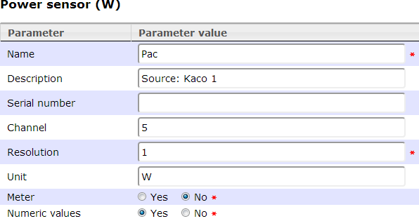
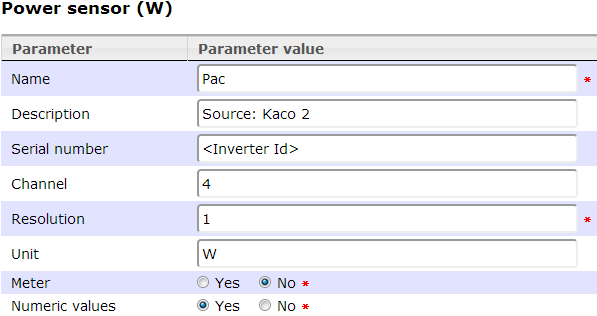

Kaco 1
ToDo - NOT YET implemented
The Kaco inverter with a RS‑232 interface provide a semicolon separated string with the operating data.
<Date>;<Time>;<Operating mode>;<Generator voltage>;<Generator current>;<Generator power>;<Mains voltage>;<Mains current>;<Feed-in power>;<Temperature>
Define the inverter with sub channels as this:
● Date and time will be ignored
● Fill the "Channel" attribute for a sub channel with the Id (zero based) of the value Id.
For example, the "Generator power" is the 6th value and have therefor Id 5

Kaco 2
ToDo - NOT YET implemented
The Kaco inverter with a RS‑485 interface provide a semicolon separated string with the operating data.
<Inverter Id>;<Operating mode>;<Generator voltage>;<Generator current>;<Generator power>;<Mains voltage>;<Mains current>;<Feed-in power>;<Temperature>;<Diurnal energy>;<Inverter type>;<Check sum>
The inverter Id here must be defined as the serial number in the master data of the inverter!
The channel definition is the same as for Kaco 1:
For example, the "Generator power" is the 5th value and have therefor Id 4

Created with the Personal Edition of HelpNDoc: Free EBook and documentation generator